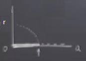

Önceki derste süperkritik Hopf çatallaşması hakkında konuştuk, bu derste onları altkritik Hopf çatallaşmasından ayırmak istiyorum. Kelimelendirmeden bu iki çatallaşmanın ne kadar farklı olduğu belli olmuyor; umarım ki bu ders sonunda ne kadar farklı olduklarını anlamış olacağız, çünkü bu farkın bilimsel bağlamda önemli yansımaları var.
Altkritik durumda elimizde bir gayrı-stabil çevrim var, ve bu çevrim bir stabil sarmal ile sarılmış,
Geçiş nasıl olur? Bir parametreyi değiştirdikçe noktalı çizgi ile gösterdiğimiz limit çevrimi ufalacak, ufalacak, ve ortadaki noktayı boğmaya / sıkıştırmaya başlayacak, ta ki şöyle resimler çıkıncaya kadar,

Dikkat edelim, ortada tam gözükmese bile hala çok ufak bir çevrim var, o sabit noktayı saran aşırı küçültülmüş bir çevrim işte, tam çatallaşma anında çevrim bir noktaya inmiş durumda. Yani stabil sarmalı çeviren gayrı-stabil çevrimden gayrı-stabil sarmala gidiş oluyor (üstte sağdaki resim).
Ters yönde geçişi de düşünebilirdik, ki buna da altkritik Hopf deniyor, üstteki sağdaki durumdan başlayabilirdik, parametre değişimi sonucu ufak bir gayrı-stabil çevrim ortaya çıkıyor, ve büyüye büyüye iki üstteki duruma geliniyor. Buna da altkritik deniyor, hangi yöne gidildiği önemli değil, önemli olan çevrim ortaya çıktığında gayrı-stabil olması.
Eğer salınımın genliği bağlamında düşünürsek, onu faz düzleminde genliğin yarıçapsal miktarı \(r\) olarak görelim (y ekseninde), ve bir kontrol parametresine eşleyerek grafiklersek (x ekseninde),

Noktalı eğri büyük ama gayrı-stabil salınımı temsil ediyor, aşağı iniyor yani küçülüyor. Ayrıca çok koyu renkli x ekseni üzerinde çizdiğim çizgi var, o da iki üstteki grafikteki sabit noktayı temsil ediyor. Ufak okla gösterdiğim noktada altkritik Hopf oluşuyor, bu noktada bir çarpışma var ve geriye gayrı-stabil sarmal kalıyor, ki bu bir sıfır genlikli obje bir bakıma. Çatallaşma figürü buna benzer.
Kıyasla süperkritik Hopf suna benzer,
Hala altta düz koyu çizgi boyunca bir stabil nokta var, ki bir noktadan sonra gayrı-stabil olur. Burada farklı olan artık çevrim sağ bölgede yaşıyor, ve stabil. Son derste baktığımız resim buydu zaten, elimizde bir stabil sabit nokta vardı ve bu sabit nokta ufak stabil limit çevrimine dönüşmüştü.
Altkritik ve süperkritik çatallaşmalara bilim dünyasının farklı kesimleri farklı isimler verebiliyorlar. Mesela süperkritik için “yumuşak (soft)’‘, “sürekli (continuous)’‘, hatta “güvenli (safe)’’ kelimeleri kullanılabiliyor. Altkritik için”sert (hard)’‘, “süreksiz (discontinuous)’‘, “tehlikeli (dangerous)’’ kelimeleri. Bunlar hakikaten farklı kelimeler ve tehlikeli ve güvenli birbirine oldukca zıt tanımlamalar. Bu iki durumdan birini güvenli diğerini tehlikeli yapan nedir? Kavrama mesela bir kontrol mühendisinin açısından bakarsak, diyelim ki mühendis uçak kanat titreşimlerine bakıyor. Tabii ki kanatların çok fazla titremesini istemeyiz yoksa kanat titreye titreye kopar ve uçak düşer - bu tehlikeli.
İki üstteki grafikte takip edersek, titreşimin genliği bağlamından bakalım, koyu çizgi üzerinde hiç kanat titreşimi yok, çünkü sabit nokta üzerindeyiz. Çatallaşma olacağı noktaya geliyoruz, şimdi sistem bir çekici (attractor) arıyor, fakat etrafta hiç çeken bir şey yok. Bu tehlikeli. Değil mi? Çünkü sıfır genlikte olan sistem bir şeye zıplayacak, ama neye? Kıyasla bir üstteki resimde orijinden başlayıp ilerliyorum, zıplama noktasında gidebileceğim bir nokta var. Titreşim var ama belli miktarda (koyu renkli eğrinin gösterdiği kadar). Daha önce babamın parkinson hastalığından kolu titriyor demiştim, bu durumda titreme yine olurdu, ama belli miktarda. Bu kolun oraya buraya kontrolsüz savrulmasından daha iyidir, değil mi? Altkritik Hopf ile aklımıza bu gelmeli, stabilite kaybı sonrası gidişin nereye olduğu belli değil, ve gidiş büyük ihtimalle felakete varacak. Bu davranış sebebiyle bu türe süreksiz ve tehlikeli ismi veriliyor.
Kutupsal kordinatta altkritik için bir örnek görelim,
Örnek
\[ \dot{r} = ar + r^3 -r^5 \qquad (1) \]
\[ \dot{\theta} = 1 \]
\(\theta\) yönünde ilginç bir olay yok, sadece dönüyoruz. Eğer \(r^3\)’ün işareti eksi olsaydı örnek süperkritik olurdu, daha önceki derste işlediğimiz örneğe benzerdi. Ama artı işareti ile şimdi ortaya yaramaz bir sistem çıkacak.
\(a < 0\) için yarıçapsal yöndeki (yani \(r\) için) tek boyutlu sisteme bakarsak \(-1/4 < a < 0\) olur,

bu rejimde bir stabil bir sabit nokta var, etrafında mükemmel yuvarlak olan gayrı stabil bir çevrim var [noktalı çizgi], \(\dot{\theta}=1\) olduğu için saat yönü tersine gidiyoruz. Dış çemberden iç sabit noktaya doğru bir sarmallanma var, peki ya çember dışındaysak? O zaman dışarıdaki başka bir çevrime doğru bir gidiş olur. İnanılası gelmiyor ama resimde bir çevrim daha var [hoca dış çemberi resme sonradan ekledi]. Bunu hızlı bir şekilde kontrol edebiliriz aslında, \(\dot{r}\) formülünde \(r\)’yi dışarı çekersek \(r(a + r^2 -r^4)\) olur, bu \(r^2\) bazında karesel bir formüldür. O zaman karesel formül çözümünü kullanarak bir tane daha \(r\) çözümü elde ederiz, o çözüm de dıştaki limit çevrimi olur. Yani iki limit çevrimin aynı anda mevcut olması durumu (coexistence) var. Bir tane büyük genlikli salınımlı stabil çevrim var, ve tabii ortada stabil bir nokta ki bu noktanın salınımı yok (yani aynı problemin iki tane çekicisi var). \(a=0\)’da demiştik ki gayrı stabil limit çevrimi çevrim küçülüp ortadaki sabit noktayı boğar. \(a>0\) sonrası içte tamamen gayrı-stabillik var, işte bu noktada sadece dışarıdaki aşırı büyük genlikli “tehlikeli’’ salınım var.

Sistem o noktada farklı bir çekiciye zıplamış oldu. Çatallaşma diyagramı şuna benzer,


Üst soldaki resimde \(a=0\)’a kadar [eksen üzerinde] koyu renkli bölgede stabil sabit nokta, sonra gayrı-stabil limit çevrimi [kesikli çizgi] var. Bu arada bazıları bu çatallaşmaya “geri çatallaşma (backward bifurcation)’’ ismini veriyor, çünkü şekilde de görüldüğü gibi, kontrol parametresi \(a\)’ya göre geriye doğru bir gidişi var. \(a=-1/4\)’te bir şeyler oluyor [soldan ikinci resim] şimdi onun detaylarına girmek istemiyorum, sonra işleyeceğiz, ama bu noktada iki çevrim çarpışıyor, bu farklı türden bir çatallaşma, ve gidişat büyük genlikli stabil çevrime doğru gidiyor.
Şimdi \(a\)’yı arttırarak olanlara bakalım, \(a<0\)’dan önce eksen üzerindeyiz, sonra \(a=0\)’da küt diye üste zıplama var, bu sürekliliği kesintili bir geçiş, pürüzsüz değil. Geçiş sonrası bakıyoruz, burada büyük genlikli limit çevrimi var, orada devam edilebilir, ama orada kalmak istemezsek \(a\)’yi azaltabiliriz,

Peki azaltınca tam geldiğimiz yola mı döneriz? Hayır, dönüş dış limit çevrimi üzerinde, \(a=0\)’dan sola doğru devam, \(-1/4\)’e doğru iniş. Bu daha önce gördüğümüz histeresis örneği, ama bu sefer sabit noktalar bağlamında değil çevrimler bağlamında.
Bir konudan daha bahsedeyim, sonra video’lara geçeceğiz. Akılda tutulması faydalı olabilecek bir bilgi lineerizasyonun süper ya da altkritik çatallaşma arasındaki farkı anlamak için yardımcı olmadığı. Bunun doğru olduğunu daha önce çizdiğimiz resimlere bakara görebiliriz [altkritik ve süperkritik resimler, bir daha].
Diyelim ki orijinden başlayarak x ekseni üzerinde sağa giden bir böceğiz [hoca bu benzetmeyi lokal olarak bilgiye bakan lineerizasyonu temsil etmek için kullanıyor], bu böcek giderken çok az miktarda dikey yönü görebilir. O zaman bu böceğin bakış açısına göre üstteki iki resim birbirine çok benzer. Stabil bir gidiş var, ardından kesikli bir gidiş var. Lokal olarak birbirlerinden pek farkları yok. Farkları çevrimleri temsil ve yukarı doğru eden dallanmalar ve bu dallanmaların stabilitesi.
Ya da bu işlemezliğin (1)’deki küpsel terim ile alakası da olabilir. Gördüğümüz sistemde herşey kontrol eden \(r^3\)’ün işaretidir, ve bu terim gayrı-lineer bir fenomen, ki lineerizasyon bu terimi analiz etmek için kullanılamaz. Eğer \(r^3\)’ün işareti artı ise genlik arttıkça \(r^3\) bu genliğin daha da artmasına yardım eder, yani patlama yapan türden bir gayrı-stabillik var. Süperkritik durumda \(r^3\) gayrı-stabil lineer kısma ters yönde işliyor, yani çok farklı bir davranış. Demek ki lineerizasyonu alt/süperkritik Hopf arasında seçim yapmak için kullanamayız.
Peki bu ayrımı gösteren hiç bir analitik kriter yok mudur? Böyle bir yaklaşım var, fakat oldukca çetrefil çünkü düşünürsek yaklaşımın nihayetinde \(r^3\) teriminin işaretini bulması gerekiyor, bu demektir ki hesap lineerizasyonla yetinemez, bir şekilde normal formu dikkatlice hesaplamalıdır. Normal form konusuna girmedik, bu konuyu bu derslerde işlemeyeceğiz, oldukca ağır bir konu. Merak edenler Guckenheimer ve Holmes’un kitabında 3.4’cu bölüme bakabilirler, ya da benim kitabımda 8.2.12’cı problemde yazdığım şarta bakabilir, bu şartı türetmeden yazdım, ama şartı kullanmakta egzersiz amaçlı olarak faydalı olabilir. Fakat en rahat olanı herhalde pür hesapsal olarak yaklaşmak, çoğunlukla bu yaklaşım yeterince iyi bir sonuç verir.
Soru
Bu bir terminoloji sorusu, altkritik Hopf’da gayrı-stabil [kesikli çizgi] kritik noktadan önce geliyor, ve o zaman “alt’’ kelimesini kullanmak mantıklı. O zaman mesela resim şöyle olsaydı
sistem yine altkritik olarak tanımlanabilir miydi?
Cevap
Evet, her ne kadar bu verilmiş kötü isim tersini ima etse de prensipsel olarak yönler önemli değil. Tek önemli olan çatallaşan obje [üstteki resimde kritik nokta sonrasında üste doğru dallanan kısım] stabil mi değil mi? Üstteki resimde çatallaşan obje, yani basit gidişten ayrılan kısım, gayrı-stabil, bu çatallaşmalara altkritik diyoruz, her ne kadar bu oluş parametrenin daha yüksek değerlerinde ortaya çıkıyor olsa bile.
Bu arada niye bu terimleri kullanıyoruz biliyor musunuz? Sıvı dinamiği bilim dalı yüzünden. Bu alanda çalışanlar mesela bir Reynolds sayısı, ya da Rayleigh sayısı gibi bir kontrol parametresi ile oynarlar, ve bu sayılar akışın ne kadar hızlı, ya da taşınımı (convection) itekleyen ısı gradyanının ne kadar kuvvetli olduğunu kontrol eder, vs. Bu alanda parametreyi arttırınca sistemi bir çatallaşmaya itersiniz, ama bu kişiler çoğunlukla kritik sayıdan önce olanlara bakarlar ki orada çatallaşma yok.
Video’lar
Şimdi size birkaç video göstermek istiyorum. Video kalitesi için özür diliyorum, amatör bir şekilde çekildiler, şimdi düşünüyorum 20 sene olmuş. 20 sene önce ben MİT’de ders veriyordum, ve Boston bölgesinde kendi alanlarında, laboraturlarında gayrı-lineer fenomenler ile karşılaşmış olan bir sürü tanıdığım vardı, bana bu deneyleri gösterdiler. Sonra ben Cornell’e gelmeye karar verince dedim ki bu müthiş deneyleri kaybetmek istemiyorum, onları bir kere kaydetsem sonra istediğim kadar göstersem iyi olmaz mı? Bu video’lar böyle ortaya çıktı.
İlk video aerodinamik uzmanı John Dugundji ile çekildi, video’da test kanatları üzerinde yapılan hava akım deneyleri var. Dugundji bu deneyler için bir sistem kurmuştu, hava tüneli diyemeyeceğim, bir elektrik süpürgesini almış, onu tersten işletiyordu, yani süpürge hava çekeceğine onu itiyor. Bir sürü gürültü oluyor tabii, ama müthiş ilginç bir sistem kurmuştu. Deney sırasında bir parametreyi de değiştirebiliyor, hava akımının gücünü ayarlıyor, vs. Bizim matematiksel olarak gördüğümüz sayısal değişimi Dugundji hakikaten süpürge üzerinde mekanik bir ayarı değiştirerek yapıyordu yani.
Uçak Kanat Titreşimi [1]
İkinci video kimyasal salınımlarla ilgili, onu İrwing Epstein adlı bir kimyacı ile kaydettik. Epstein, denge noktasına alışılageldik, tekdüze (monotonic) şekilde giden kimyasal reaksiyonlarla değil dengeye giderken salınıma giren türden reaksiyonlarla ilgileniyordu. 50’li yıllarda kimsenin böyle reaksiyonlardan haberi yoktu, reasiyonlar dengeye düz şekilde gider zannediliyordu. Mesela reaksiyon sırasında renk bir kere değişir, ama o kadar diye düşünülüyordu. Kapalı bir sistemde entropinin artışını anlatan Termodinamiğin 2. kuralını düşünerek te bu durumlarda çok ilginç şeylerin olacağı beklenmiyordu. Hikayenin daha çetrefil olduğu sonradan anlaşıldı.
Eski Sovyetler Birliğinden bir biyokimyacı Boris Belousov, krebs döngüsü ile uğraşıyordu, bu döngünün bir test tüp şeklini yaratmak istedi. Bu döngülerde mevcut olan kimyasal öğeleri karıştırdı, ve deneylere başladı. Fakat şaşırtıcı bir şekilde reaksiyonun periyodik olarak renk değiştirdiğini gördü. Renk bir sarı oluyordu, sonra renksiz, sonra tekrar sarı oluyordu, bu renk değişimi dakikalarca bu şekilde gidip geliyordu. Bu durum Belousov’u çok şaşırttı tabii, bu zamana kadar kimse böyle bir şey görmemişti, olanları bir makale dikkatlice anlatmaya uğraştı, bilimsel yayınlara gönderdi, fakat bu dergilerden sürekli ret cevabı aldı. Araştırmaya bakan hakemler “olur mu böyle şey?’’ yorumunu yapıyorlardı.
Belousov pek çok kez yayını denedi, sonunda pek takip edilmeyen bir radyoloji yayınında makaleyi yayınlatmayı başardı. Neyse, ama Moskova’da da yaptığını bilenler vardı, bu hocalardan birisi doktora öğrencilerinden birine “şu Boris’in anlattığı deneyi bir yap bakalım ne olacak’’ demiş, öğrenci deneyi yapıyor ve tabii ki aynı sonucu görüyor. Öğrencinin ismi Zhabotinsky ve onun ismini duymuşsunuzdur belki çünkü bu renk deneyi artık Zhabotinsky deneyi olarak biliniyor. O deneyi daha da geliştirdi, mesela deneyin birazdan göreceğimiz hali birkaç renk arasında geçişi gösteriyor.
Irwing Epstein ile Kimyasal Reaksiyon, Renk Değişimi [2]
Ornek 8.2.1 [kitaptan]
\(\dot{x} = \mu x - y + xy^2\) ve \(\dot{y} = x + \mu y + y^3\) sistemini olsun, \(\mu\) değiştirildikçe Hopf çatallaşmasının orijinde ortaya çıktığını gösterin. Çatallaşma altkritik mi, süperkritik mi, dejenere mi?
import numpy as np
import matplotlib.pyplot as plt
from scipy import *
from scipy import integrate
from scipy.integrate import ode, odeint
# Initial setup
xx0 = np.array([.25,1.5])
mu_ =[-.5,0,.07,1]
xmin,xmax = -2,2
ymin,ymax = -2,2
lw = 1.5
plt.close()
fig,([ax0,ax1],[ax2,ax3]) = plt.subplots(2,2,
figsize=(12,8),
sharex=True,
sharey=True)
ax0.set_facecolor(plt.cm.gray(.95))
ax1.set_facecolor(plt.cm.gray(.95))
ax2.set_facecolor(plt.cm.gray(.95))
ax3.set_facecolor(plt.cm.gray(.95))
#ax.axis('equal')
#Vector field
x1,y1 = np.linspace(xmin,xmax,200),np.linspace(ymin,ymax,200)
X,Y = np.meshgrid(x1,y1 )
#Plot1
#====================================
mu=mu_[0]
U = mu*X - Y +X*Y**2
V = X + mu*Y + Y**3
start = [[0.3,0],[1.4,-.35]]
#Plotting
strm = ax0.streamplot( X,Y,U, V,linewidth=.2)
strmS = ax0.streamplot(x1,y1, U, V, start_points=start, color="crimson", linewidth=.5)
fig.suptitle('Hopf Bifurcation /n Strogatz 8.2.1, p.256', size=16)
ax0.set_title( 'a) Stabil Sarmal', size=12)
ax0.text(xmin+.25,ymax-.25, r'$\mu = {0}$'.format(mu),size=14)
ax0.plot(y1/(mu+y1**2),x1, 'k-.',lw=lw, label=r'x-nullcline: $x = \frac{y}{(\mu+y^2)}$')
ax0.plot(-mu*y1+y1**3,x1, 'k:', lw=lw, label=r'y-nullcline: $x = -\mu y + y^3}$')
ax0.set_xlim([xmin,xmax])
ax0.set_ylim([ymin,ymax])
ax0.set_xlabel(r"$ x$",size=14)
ax0.set_ylabel(r"$ y$",size=14)
plt.grid(True)
#Plot 2
#===================================
mu= mu_[1]
U = mu*X - Y +X*Y**2
V = X + mu*Y + Y**3
start = [[0.3,0],[.6,.5]]
#Plotting
strm = ax1.streamplot( X,Y,U, V,linewidth=.2)
strmS = ax1.streamplot(x1,y1, U, V, start_points=start, color="crimson", linewidth=.5)
ax1.set_title( 'b) Kritik Nokta', size=12)
ax1.text(xmin+.25,ymax-.25, r'$\mu = {0}$'.format(mu),size=14)
ax1.plot(y1/(mu+y1**2),x1, 'k-.',lw=lw, label=r'x-nullcline: $x = \frac{y}{(\mu+y^2)}$')
ax1.plot(-mu*y1+y1**3,x1, 'k:', lw=lw, label=r'y-nullcline: $x = -\mu y + y^3}$')
ax1.set_xlim([xmin,xmax])
ax1.set_ylim([ymin,ymax])
ax1.set_xlabel(r"$ x$",size=14)
ax1.set_ylabel(r"$ y$",size=14)
plt.grid(True)
#Plot 3
#===================================
mu= mu_[2]
U = mu*X - Y +X*Y**2
V = X + mu*Y + Y**3
start = [[0.3,0],[.6,.5]]
#Plotting
strm = ax2.streamplot( X,Y,U, V,linewidth=.2)
strmS = ax2.streamplot(x1,y1, U, V, start_points=start, color="crimson", linewidth=.5)
ax2.set_title( 'c) Gayri Stabil Sarmal', size=12)
ax2.text(xmin+.25,ymax-.25, r'$\mu = {0}$'.format(mu),size=14)
ax2.plot(y1/(mu+y1**2),x1, 'k-.',lw=lw, label=r'x-nullcline: $x = \frac{y}{(\mu+y^2)}$')
ax2.plot(-mu*y1+y1**3,x1, 'k:', lw=lw, label=r'y-nullcline: $x = -\mu y + y^3}$')
ax2.set_xlim([xmin,xmax])
ax2.set_ylim([ymin,ymax])
ax2.set_xlabel(r"$ x$",size=14)
ax2.set_ylabel(r"$ y$",size=14)
plt.grid(True)
#Plot 4
#===================================
mu= mu_[3]
U = mu*X - Y +X*Y**2
V = X + mu*Y + Y**3
start = [[0.3,0],[.6,.5]]
#Plotting
strm = ax3.streamplot( X,Y,U, V,linewidth=.2)
strmS = ax3.streamplot(x1,y1, U, V, start_points=start, color="crimson", linewidth=.5)
ax3.set_title( 'd) Gayri Stabil Sarmal', size=12)
ax3.text(xmin+.25,ymax-.25, r'$\mu = {0}$'.format(mu),size=14)
ax3.plot(y1/(mu+y1**2),x1, 'k-.',lw=lw, label=r'x-nullcline: $x = \frac{y}{(\mu+y^2)}$')
ax3.plot(-mu*y1+y1**3,x1, 'k:', lw=lw, label=r'y-nullcline: $x = -\mu y + y^3}$')
ax3.set_xlim([xmin,xmax])
ax3.set_ylim([ymin,ymax])
ax3.set_xlabel(r"$ x$",size=14)
ax3.set_ylabel(r"$ y$",size=14)
ax3.legend()
plt.grid(True)
plt.savefig('13_12.png')
Bölüm 8.5 - Josephson Sistemi
import matplotlib.pyplot as plt
from matplotlib.animation import FuncAnimation, writers
from scipy import *
from scipy import integrate
from scipy.integrate import ode, odeint
import numpy as np
fig,ax = plt.subplots(1,1,figsize=(8,8))
xmin,xmax = 0,8
ymin,ymax = -2,2
gridpoints = 500
I = .9
alpha = .05
x1,y1 = np.linspace(xmin,xmax,gridpoints),np.linspace(ymin,ymax,gridpoints)
X,Y = np.meshgrid(x1,y1 )
U = Y
V = I - np.sin(X) - alpha*Y
start = [[2,1],[4,-1]]
strm = ax.streamplot( X,Y,U, V, linewidth=.2)
strmS = ax.streamplot(x1,y1, U, V, start_points=start,
color="crimson",
linewidth=.5)
ax.set_facecolor(plt.cm.gray(.95))
ax.set_title(r'Josephson Histeresis for $ I = {0}, \alpha = {1}$ in Strogatz 8.5'.format(I, alpha))
ax.set_xticks([0., .5*np.pi, np.pi, 1.5*np.pi, 2*np.pi])
ax.set_xticklabels(["$0$", r"$\frac{1}{2}\pi$",
r"$\pi$", r"$\frac{3}{2}\pi$", r"$2\pi$"])
ax.set_xlim([xmin,xmax])
ax.set_ylim([ymin,ymax])
ax.set_xlabel(r"$\phi$")
ax.set_ylabel(r"$y$")
ax.grid(True)
plt.savefig('13_13.png')
Kaynaklar
[1] Strogatz, https://youtu.be/qV0tCroLOHk?t=1813
[2] Strogatz, https://youtu.be/qV0tCroLOHk?t=3173